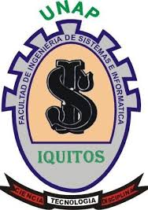
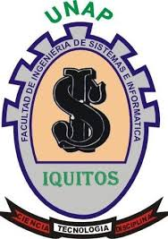

Universidad Nacional de la Amazonía Peruana
Facultad de Ingeniería en Sistemas e Informática
"Ingeniería de Sistemas e Informática: Creando Soluciones para el Mundo Digital"
Datos:
Alumno: Henry Alexander Cordova Tamani
Docente: Ing. Luis Honorato Pita Astengo
Asignatura: Informática II
Ciclo: 2024-II